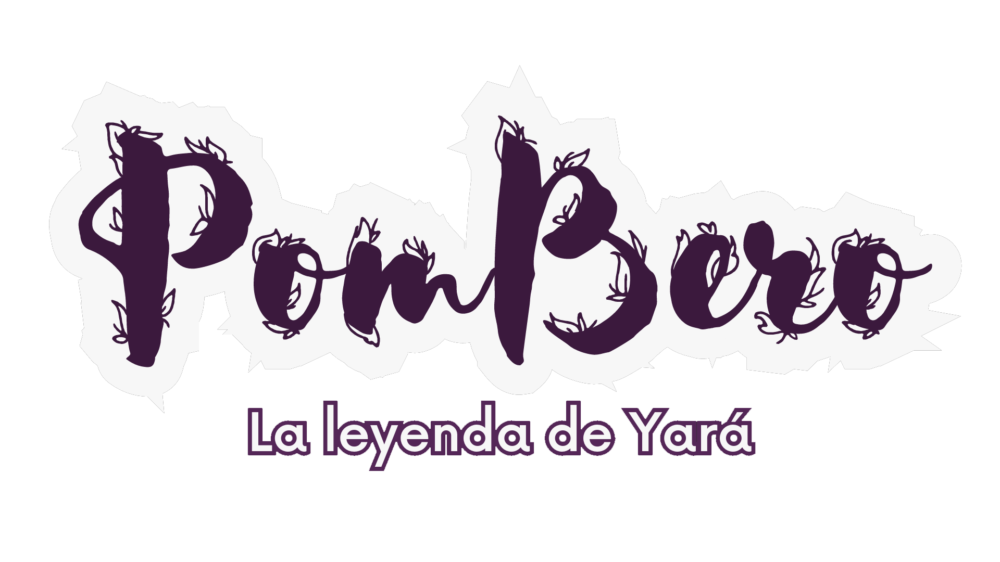

PROYECTOS
Texto de relleno

Pombero: La leyenda de Yará
Subtitulo
- Descripción: Embárcate en el rol de esta leyenda que busca no ser olvidada. Descubre los misterios del Pombero Yara. Intervení en el balance entre las personas y la naturaleza, encuentra las tareas emergentes como en Among-us dentro de biomas argentinos en un mundo como Dont starve together
- Link al proyecto